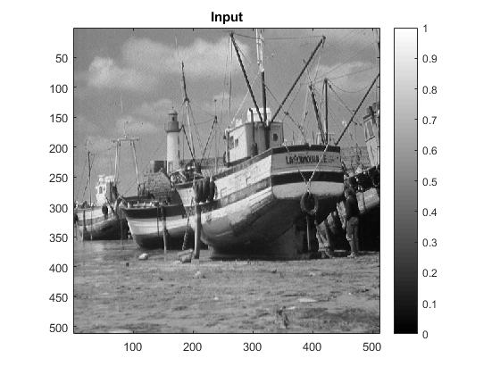
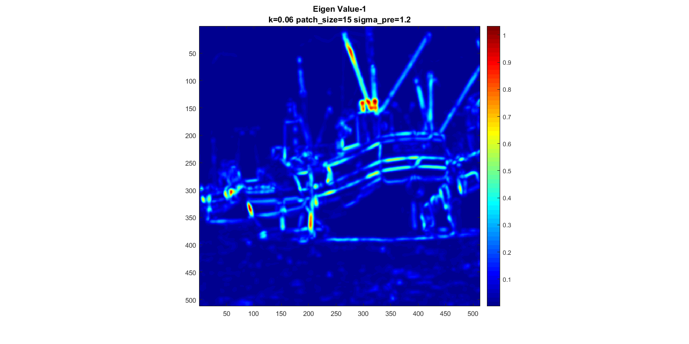
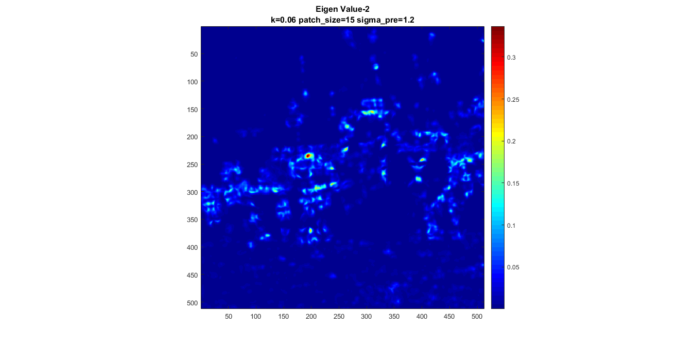
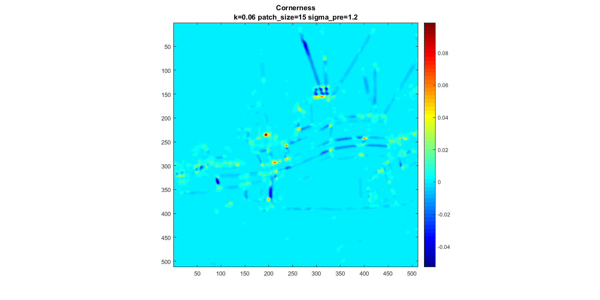
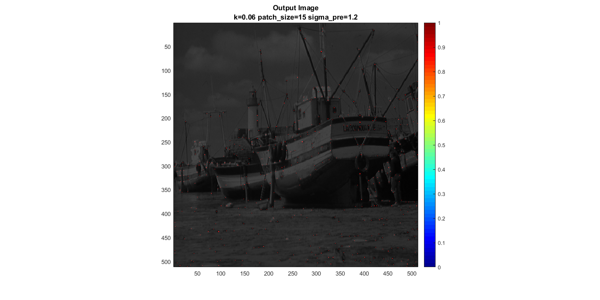

Contents
MyMainScript for Harris Corner Detection
By Sarthak Consul (16D100012)
-- Parthsarathi Khirwadkar (16D070001)
-- Bhishma Dedhia (16D170005)
tic;
Loading Input
storedStructure = load('../data/boat.mat'); input = storedStructure.imageOrig; input=im2double(input)/255; figure imagesc(input); colormap(gray); title('Input'); daspect([1,1,1]); axis tight; colorbar;
Parameters
k = 0.06; % % Gaussian Filter applied before computing gradients sigma_pre = 1.2; % (so filter size of 4x4) % patch_size = 15; % so, gaussian weights = patch_size/6
Harris Corner Detection
output = myHarrisCornerDetector(input, k,patch_size,sigma_pre);
my_imshow(output,{'Output Image',strcat('k=',num2str(k),' patch\_size=', num2str(patch_size),' sigma\_pre=', num2str(sigma_pre))});
    Note on tuning
- Tuning og sigma_pre affects on how accurate gradients are found. Too small results in peaky gradients due to noise and too large removes edges entirely
- k must lie between 0 and 0.25. k is chosen to result in positive cornerness at corner points, negative cornerness at edge points and zero cornerness at uniform regions - Non max suppression is essential to pick the true corner from a local cluster
- Patch_size decides how large a area must the corner point satify 'cornerness' property. If it is too small, errant points would be identified as corners. If it is too large, notion of a corner is lost to the patch
toc;
Elapsed time is 4.181669 seconds.